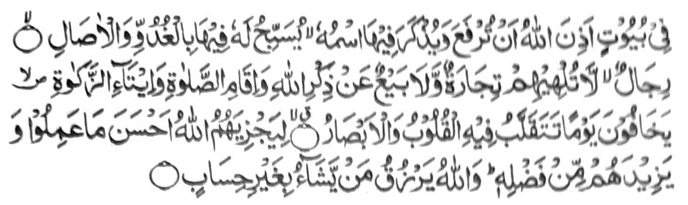

“Zisi-i ko manga walay a inisogo o Allah so kasela-aon, go so kapekha-aloy ron o ngaran Niyan, gi-i zambayang a bagi-an Niyan ro-o ko manga kapita-pita go so manga kagabi-gabi. So manga mama a di kiran phakasendod so kapamasa go so kaphasa pho-on ko tadem ko Allah, go so kipamayandegen ko Sambayang, go so katonaya ko Zakat: Ipekhalek iran so gawi-i a phananabaden ro-o so manga poso, go so manga kailay, - ka imbalas kiran o Allah so mapiya a pinggola-ola iran, go pagomanan Niyan siran ko kakawasa-an Niyan. Na so Allah a perizkiyan Niyan so tao a kabaya Iyan, sa di khasar a pandapal.” (Surah An-Nur: 36-38)